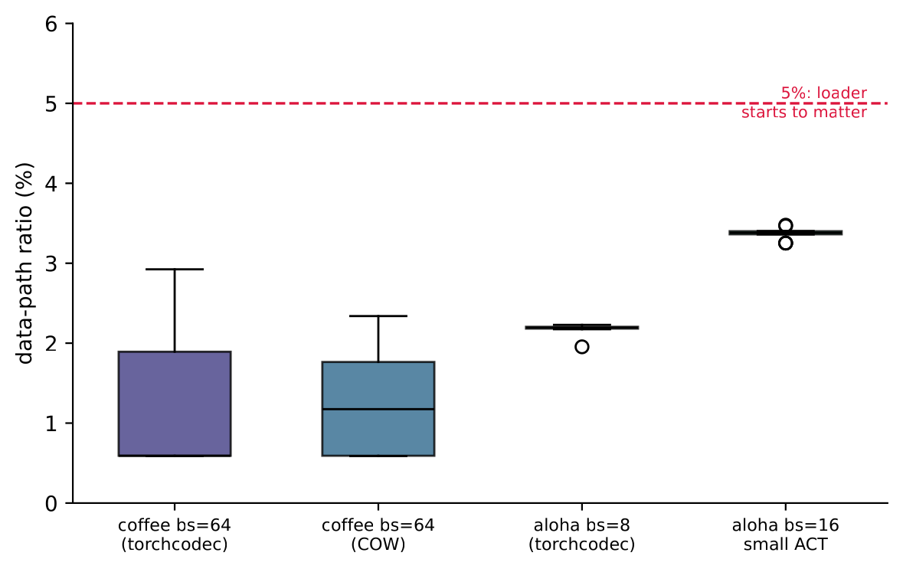
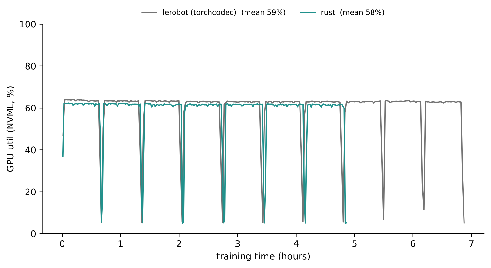
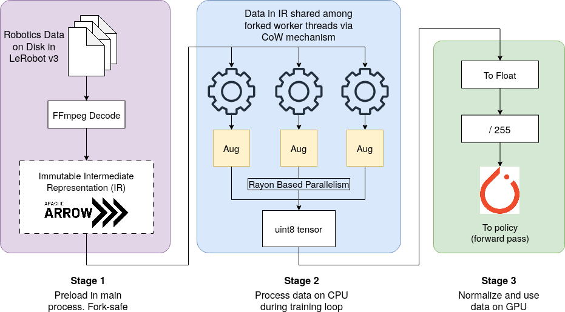

Summary
Faster data loaders did not make training faster
Robot learning teams invest in faster data loading on the assumption that it limits training speed. We tested that assumption by profiling end-to-end policy training in LeRobot, with ACT and SmolVLA, on a consumer and a server GPU, against a Rust data engine we built to be as fast as we could make it.
Share of each training step spent waiting for data
1 to 3.5%
Across resolutions from 84×84 to 480×640 and batch sizes from 8 to 64. Model compute takes the rest.
Isolated loader speedup over torchcodec
3.94×
End-to-end training wall-clock with our engine: 324 ± 1 s against 326 ± 4 s, within run-to-run noise.
Slower training with PyAV seeking in AV1 video
5.6×
The one real bottleneck we found (data-path ratio ≈ 488%), caused by unindexed sequential seeks rather than by loading itself.
Method
One ratio tells you whether the loader matters
Each optimization step runs two paths at once. The data path decodes frames, applies augmentation and copies tensors to the GPU. The compute path runs the forward pass, loss, backward pass and optimizer update. DataLoader workers prepare batch t+1 while the GPU works on batch t, so the data path only costs wall-clock time when it cannot be hidden behind compute.
LeRobot already logs both sides of this every few steps: data_s, the time the trainer blocks waiting for a batch, and updt_s, the time of the compute path. Our metric is their ratio:
Amdahl's law turns r into a hard limit. Even an infinitely fast loader can speed up training by at most a factor of 1 + r. At r = 3.5%, the highest ratio we measured, that is a 3.5% speedup (1.035×) at best.
Where a training step goes
Steady-state time per step, mean over 100-step windows
In every standard configuration the data wait is a sliver at the end of the bar; switch to Standard only to see it at a readable scale. The PyAV row is the exception, explained further down. Values are from Table 1 of the paper.
Show the numbers
| Configuration | data_s (ms) | updt_s (ms) | r |
|---|

Finding
Isolated speedups vanish in the training loop
On a 4-camera 480×640 dataset, our arrow_uint8 pipeline loads samples 3.94× faster than torchcodec and 6.95× faster than PyAV in a single process. A warm frame in the copy-on-write cache is served at about 625k samples/s, around 106× faster than a cold disk decode. In the training loop, measured over three seeds, none of this changes wall-clock time beyond run-to-run noise.
Isolated loading throughput
Samples/s, single process, no augmentation (higher is faster)
Training-loop wall-clock
Seconds, MimicGen Coffee 84×84, batch 64 (lower is faster)
Left: Table 2 of the paper. Right: Table 3; mean ± std over seeds 42 to 44 where three seeds are marked. The wall-clock excludes the one-time pre-decode (about 50 s per 100 episodes), which would only make our backend slower.
Show the numbers
| Backend | Isolated, no-aug (samples/s) | Isolated, heavy-aug (samples/s) |
|---|---|---|
arrow_uint8 (ours, /255 on GPU) | 135.5 | 48.1 |
arrow_f32 (ours, /255 on CPU) | not measured | 25.5 |
| torchcodec (baseline) | 34.4 | 26.3 |
| PyAV | 19.5 | 16.0 |
| Backend | Training-loop wall-clock | vs torchcodec |
|---|---|---|
| torchcodec (baseline, 3 seeds) | 326 ± 4 s | baseline |
| CoW raw-pixel (ours, 3 seeds) | 324 ± 1 s | −0.6% |
arrow_uint8_jpeg (ours, 1 seed) | 329 s | +0.9% |
Placement matters too. arrow_f32 moves the float conversion and /255 normalization to the CPU, which quadruples host memory and PCIe transfer volume. Under heavy augmentation it nearly halves isolated throughput and drops below torchcodec.
Finding
The real bottleneck is unindexed video seeking
PyAV is the only configuration where the data path bounds training. It seeks sequentially, O(N), through AV1 video that has no frame-level index. On MimicGen Coffee this gives data_s ≈ 0.81 s against updt_s = 0.166 s, so r ≈ 488%. The GPU sits idle for about 83% of each step, and training time grows from 5.8 to 32.2 minutes (5.6× slower). At batch size 32 the gap widens to 15.1×, which is behind LeRobot's switch to torchcodec.
This is a property of the decoder's seek path, not of the LeRobot format. The same AV1 files read through torchcodec's indexed seeking give r = 1.1%. Pair a storage format with a decoder that supports index-based random access and severe data bottlenecks do not arise.
Finding
Online augmentation stays cheap
Augmentation adds at most 0.3 percentage points to r. Our fused pipeline applies color jitter and cropping to integer pixels in one Rust pass before tensors are built. It is 1.83× faster than torchvision v2 in isolation under heavy augmentation (48.1 against 26.3 samples/s) and matches it in end-to-end training.
Data-path ratio r, MimicGen Coffee 84×84, batch 64 (Table 4)
| Augmentation pathway | no-aug | +aug |
|---|---|---|
| torchcodec (torchvision v2) | 1.13% | 1.29% |
| CoW (Rust-IR fused) | 1.23% | 1.49% |
Finding
The result holds for a VLA on a server GPU
To check that this is not an artifact of a small ACT model on consumer hardware, we trained SmolVLA on LIBERO on an L40S and evaluated on LIBERO-10. GPU utilization is the same within 1.3 percentage points across all four backend configurations. The remaining idle time comes from Python host overhead and periodic evaluation rollouts, not from data stalls: the utilization drops in the multi-hour trace line up with checkpointing and rollouts.
SmolVLA, L40S: NVML GPU duty cycle (Table 5)
| Backend | GPU util | Memory used |
|---|---|---|
| LeRobot (torchcodec) | 60% | 11.5 / 48 GB |
| LeRobot + aug | 59% | 11.4 / 48 GB |
| Rust (data_core) | 59% | 11.5 / 48 GB |
| Rust + aug | 60% | 11.5 / 48 GB |

Try it
How much could a faster loader save on your run?
Read data_s and updt_s off your lerobot-train log, skipping the first two logged windows as warm-up, and enter their means below. Or start from one of the configurations in the paper.
Overall speedup S(k) = (1 + r) / (1 + r / k) for a loader that is k× faster, the same Amdahl model as the paper's envelope figure. As k grows, S approaches 1 + r. Presets use the ratios reported in the paper; the rounded means shown in the inputs can differ from them in the last digit. Try the PyAV preset to see the one regime with real headroom (about 5.9×).
Where to look instead
Feature caching targets the compute path
If the loader is not the limit, the useful target is updt_s. Its largest repeated cost is the per-camera visual backbone, which reprocesses the same frames every epoch. We cached the outputs of a frozen ResNet-18 and trained the ACT action head from the cache.
Faster training from cached features
1.3 to 1.5×
Aloha, 40 episodes: 89.1 → 61.6 s. Coffee, 80 episodes: 68.7 → 51.9 s. Same frozen backbone run online as the baseline.
Further speedup from pooled features
2.5×
Pooled instead of spatial-map features on aloha: 61.6 → 24.6 s.
Smaller cache with pooled features
47.5×
11.05 GB → 232.5 MB on aloha, 40 episodes.
The cache is faithful: the same head trained on cached features and on the identical backbone run online reaches matching train L1 (0.0623 against 0.0624). In 25 closed-loop MimicGen rollouts after 10k steps, both the cached policy and a stock LeRobot ACT baseline score 0/25, so the failure comes from the short training budget rather than from caching. Feature caching is a validated systems lever whose policy-level benefit remains to be shown at a budget where the uncached baseline succeeds.
The code
data-core: the engine behind the measurements
To give data loading its best case, we built a data engine in Rust and released it with the paper. It reads LeRobot v2 and v3 datasets, decodes video once with FFmpeg into Apache Arrow buffers, and hands samples to PyTorch.

arrow_uint8 strategy. Data is preloaded into an intermediate representation (stage 1), worker processes are forked (stage 2), and data is normalized on the GPU (stage 3).Arrow intermediate representation
Episodes are decoded once into immutable Arrow columns. Reading a frame is an O(1) pointer lookup, and bytes reach PyTorch without serialization.
Copy-on-write shared cache
The parent process decodes everything before DataLoader workers fork. Workers share one copy of the decoded data and never call FFmpeg, which is not fork-safe.
Three materialization strategies
arrow_f32 normalizes on the CPU, arrow_uint8 sends integers and normalizes on the GPU, and arrow_uint8_jpeg keeps JPEG bytes in the cache to save memory and decodes them in Rust on access.
Fused augmentation in Rust
Color jitter, cropping, flips and noise run as a single parallel pass over integer pixels, consistent across the frames of a sample window.
Install and load a dataset
git clone https://github.com/PAIR-data-platform/data-core-rs.git
cd data-core-rs
python3 -m venv .venv && source .venv/bin/activate
pip install "maturin[patchelf]"
maturin develop --releasefrom data_core import LazyDataset
ds = LazyDataset.open("/path/to/lerobot/dataset") # reads metadata only
frame = ds[42] # decodes on demandThe build needs Rust and the FFmpeg development libraries; see the README for requirements. The repository also contains the training, benchmark and rollout scripts behind each table, and the lerobot-train runs use our LeRobot fork.
Setup
Experimental setup
| Hardware | RTX 4070 Ti Super (16 GB) with 32 GB RAM for the ACT runs; L40S (48 GB) for SmolVLA. 32 CPU cores on both. |
|---|---|
| Datasets | mineral/lerobot_mimicgen_coffee_d0 (84×84, 2 cameras, 1000 episodes, AV1, 20 fps), lerobot/aloha_static_coffee (480×640, 4 cameras, 50 episodes, AV1, 50 fps), LIBERO-10. |
| Policies | ACT with a ResNet-18 backbone, 2,000-step timing runs, batch size 8 to 64; a smaller ACT variant to probe a cheaper model. SmolVLA with a SmolVLM2-500M backbone, batch size 16. |
| Loader | 4 DataLoader workers, prefetch factor 2. GPU utilization from NVML sampled every 20 ms. |
Citation
@inproceedings{jain2026dataloading,
title = {An Empirical Study of Data-Loading Bottlenecks
(and Non-Bottlenecks) in Robotic Imitation Learning},
author = {Jain, Mrinal and Gupta, Arpit and Garg, Animesh},
booktitle = {Conference on Robot Learning (CoRL)},
year = {2026},
url = {https://openreview.net/forum?id=Vv1WXMkSTD}
}